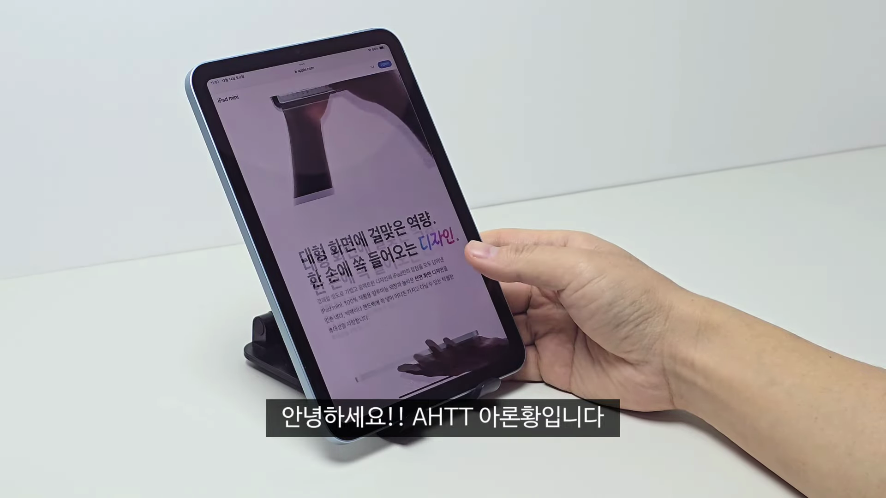
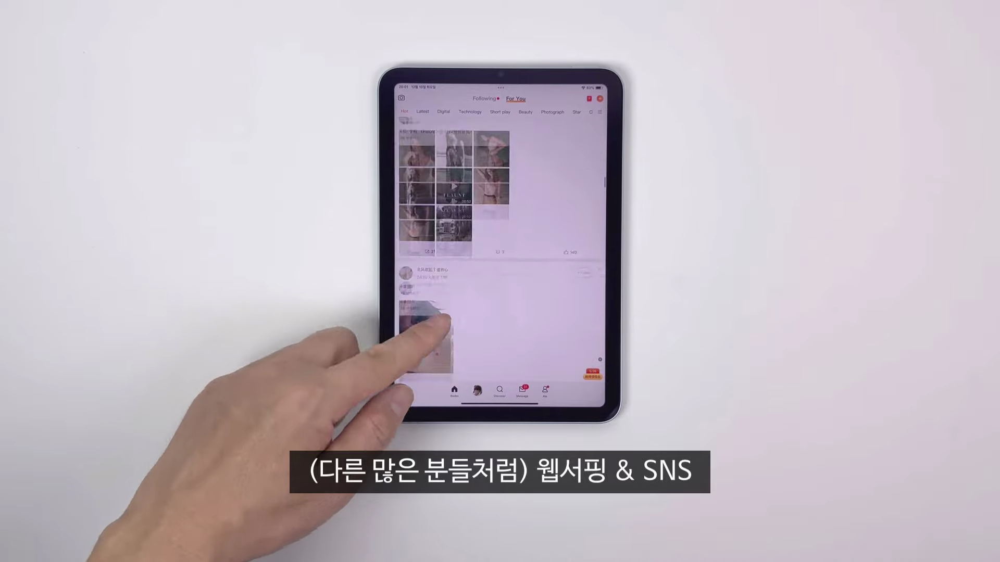
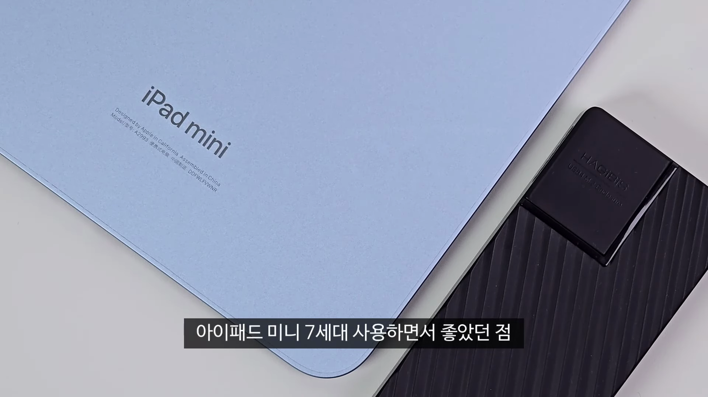
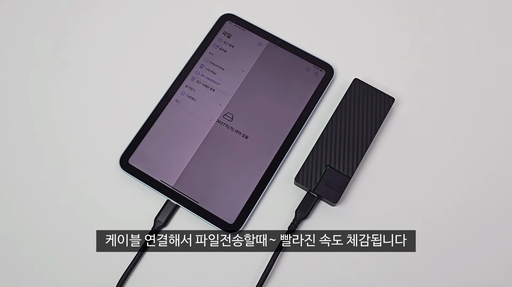
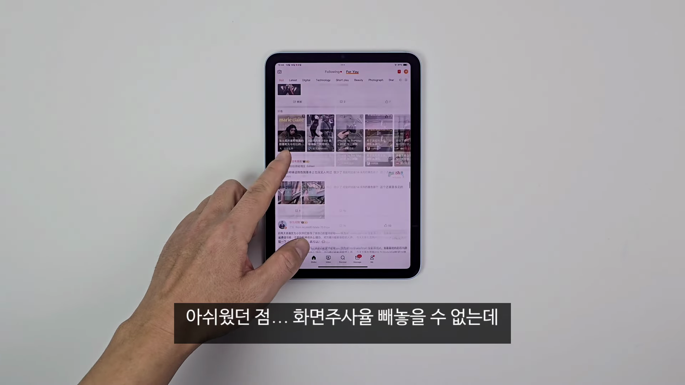
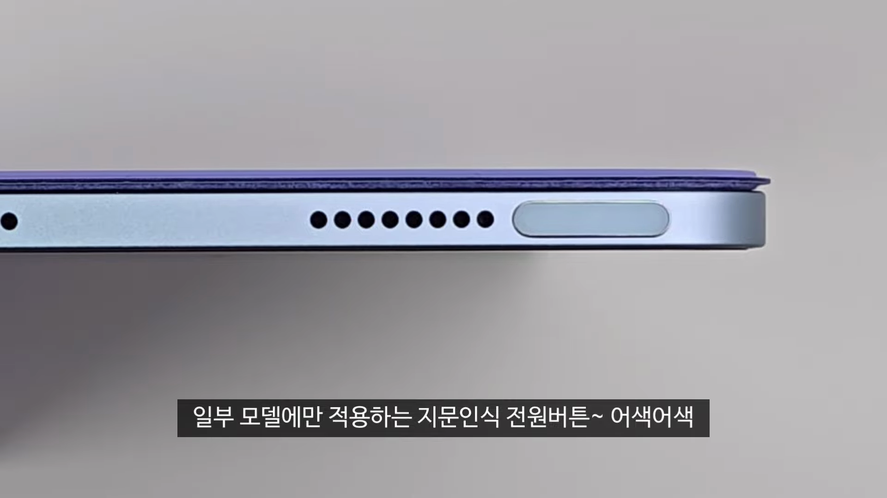
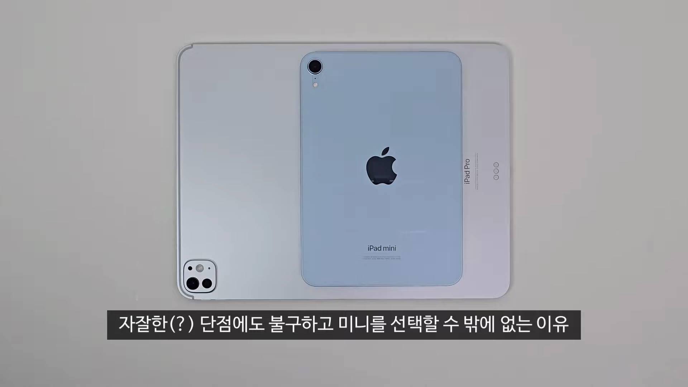

이번 포스트에서는 아이패드 미니 7세대에 대한 사용 후기를 다룹니다. 이 태블릿의 성능, 디자인, 그리고 사용 중 느낀 장단점을 상세히 정리하여, 구매를 고민 중인 분들에게 유용한 정보를 제공하고자 합니다. 
아이패드 미니 7세대 소개
- 아이패드 미니 7세대 사용 후기 제공
- 구입한 모델: WiFi, 블루, 128GB
아이패드 미니 7세대를 몇 주간 사용한 후 느낀 점들을 공유합니다.

사용 용도 및 성능
- 주로 웹서핑, SNS, 유튜브, 넷플릭스 시청
- 가끔 4K 영상 컷 편집 용도로 사용
- 라이트한 용도로 구매
- 서브 기기로의 필요성
웹서핑, SNS, 영상 시청 등 라이트한 용도로 활용하고 있으며, 4K 영상 편집을 가끔 시도했습니다.

장점
- 디스플레이 라미네이팅 처리
- 반사 방지 코팅으로 화면 집중 가능
- 디자인은 전세대와 동일, 호환 케이스 사용 가능
- 애플 펜슬 프로 기능 완벽 지원
하드웨어적인 장점으로는 디스플레이 라미네이팅과 반사 방지 코팅이 있어 사용자 집중도가 높습니다.

빠른 파일 전송 및 용도
- 파일 전송 속도 개선
- 이전 세대보다 빠른 10GBPS 지원
파일 전송 속도가 이전 세대보다 개선되어 사용이 더 편리해졌습니다.

아쉬운 점들
- 60Hz 화면 주사율
- 대비 높은 베젤 사이즈
- 느린 20W 충전 속도
- 스피커 품질 저하
화면 주사율 및 베젤의 두께, 충전 속도, 스피커 품질 등에서 아쉬운 점이 있었습니다.

UI 및 사용성 문제
- 의외의 UI 버그
- 세로에서 가로로 전환 시 앱 배열 이상
UI 관련하여 화면 전환 시 앱 배열이 이상하게 나타나는 문제가 있었습니다.

결론 및 추천
- 성능이 모든 단점을 커버함
- 가벼운 블루투스 키보드와 함께하면 다양한 작업 가능
아이패드 미니 7세대는 성능이 뛰어나 단점을 상쇄하며, 가벼운 작업을 소화할 수 있는 최고의 선택입니다.
Tags: #아이패드 미니 7세대 #iPad Mini 7 #태블릿 리뷰 #성능 #디스플레이 #애플 펜슬 #사용 후기 #속도 #스피커 #UI 문제 #특화 기능